Tema 6
Algoritmos voraces
Dpto. de Sistemas Informáticos y Computación
Facultad de Informática
Universidad Complutense de Madrid
6.1Introducción: problema de los ficheros
El problema de los ficheros
Tenemos \(n\) ficheros y un disco duro de capacidad \(d\).
Conocemos cuánto espacio ocupa cada fichero.
¿Cuál es el número máximo de ficheros que podemos almacenar en el disco, de modo que la suma de los tamaños de los ficheros almacenados no exceda la capacidad máxima \(d\) del disco duro?
Solución mediante programación dinámica
Definición de la recurrencia
Suponemos que \(S[0..n)\) es un vector que contiene el tamaño de cada fichero.
\(\mathit{ficherosGen}(i, j)\) \(\equiv\)
máximo número de ficheros que podemos guardar en un disco de capacidad \(j\) escogiendo solamente entre los ficheros \([0..i)\).
\[\small \begin{array}{lll} \mathit{ficherosGen}(0, j) & = & 0 \\ \mathit{ficherosGen}(i, 0) & = & 0 \\ \mathit{ficherosGen}(i, j) & = & \mathit{ficherosGen}(i-1, j) \quad \text{si } i,j > 0 \wedge S[i-1] > j\\ \mathit{ficherosGen}(i, j) & = & \max \{ \mathit{ficherosGen}(i-1, j), 1 + \mathit{ficherosGen}(i-1, j - S[i-1]) \} \: \text{e.o.c.} \end{array} \]
Llamada inicial: \(\mathit{ficherosGen}(n, d)\)
Implementación
int ficheros(const vector<int> &s, int d)
{
int n = s.size();
matriz<int> tabla = crear_matriz(n + 1, d + 1, 0);
for (int i = 1; i <= n;
i++) {
for (int j =
1; j <= d; j++)
{
if (s[i-1] >
j) {
tabla[i][j] = tabla[i-1][j];
} else
{
tabla[i][j] = max(tabla[i-1][j], 1 +
tabla[i-1][j - s[i-1]]);
}
}
}
return
tabla[n][d];
}
Coste en espacio y tiempo: \(\Theta(n\cdot d)\) donde \(n\) = s.size()
Coste en espacio optimizable hasta \(\Theta(d)\)
Solución mediante algoritmo voraz
Algoritmo voraz
Sea \(S[0..n)\) el vector con los tamaños de los ficheros y \(d\) la capacidad máxima del disco.
El algoritmo voraz sigue la siguiente estrategia:
Buscar el fichero de menor tamaño. Si cabe en el disco, meterlo.
Buscar el segundo fichero de menor tamaño. Si cabe en el disco, meterlo.
Buscar el tercer fichero de menor tamaño. Si cabe en el disco, meterlo.
…
Y así sucesivamente, hasta que el \(i\)-ésimo fichero de menor tamaño ya no quepa en el disco, o hayamos metido todos los ficheros.
La estrategia puede implementarse eficientemente si se ordena previamente el vector \(S\), de menor a mayor tamaño.
Implementación
int ficheros(const vector<int> &s, int d)
{
int n = s.size();
vector<int> tam_ord
= s;
sort(tam_ord.begin(), tam_ord.end()); Coste ordenación: \(\Theta(n \log n)\)
int num_ficheros = 0,
espacio_ocupado = 0, i = 0;
while (i < n
&& espacio_ocupado + tam_ord[i] <= d) { Coste bucle en caso peor: \(\Theta(n)\)
num_ficheros++;
espacio_ocupado
+= tam_ord[i];
i++;
}
return
num_ficheros;
}
Coste: \(\Theta(n
\log n)\), donde \(n\)
= s.size()
Programación dinámica vs. algoritmos voraces
Observemos la ecuación recursiva del método de programación dinámica, suponiendo que \(S[i-1] \leq j\): \[\small \mathit{ficherosGen}(i, j) = \max \{ \mathit{ficherosGen}(i-1, j), 1 + \mathit{ficherosGen}(i-1, j - S[i-1]) \} \]
En la ecuación se calcula el máximo de dos términos:
En el primero de ellos se explora la posibilidad en la que el fichero i-ésimo se descarte.
En el segundo de ellos se explora la posibilidad en la que el fichero i-ésimo se guarde en el disco duro.
- Es decir, el algoritmo de programación dinámica explora las dos alternativas y toma la decisión a partir de aquella que obtenga un mejor resultado (es decir, más ficheros).
Programación dinámica vs. algoritmos voraces
El algoritmo voraz también recorre los ficheros.
A la hora de decidir si se mete el fichero i-ésimo, no explora las consecuencias «a largo plazo» para saber qué decisión tomar.
Los algoritmos voraces toman cada decisión de manera local, para cada fichero.
- Decide incluirlo o no, en función de si cabe o no en el espacio restante del disco.
Una vez tomada la decisión de moverlo al disco o no, esa decisión es firme; es decir, no se rectifica en un momento posterior.
🤔 ¿Pero cómo sabemos que la solución obtenida es óptima?
Hay que demostrarlo para cada problema
Demostrando que la estrategia voraz es óptima
Definición de solución factible
Suponemos que el vector de tamaños de ficheros \(S[0..n)\) está ordenado de manera creciente y que la capacidad máxima del disco duro es \(d\).
Una solución \(X[0..n)\) es un vector de booleanos.
- Si \(X[i] = \mathit{true}\), entonces el fichero \(i\) se introduce en el disco.
- Si \(X[i] = \mathit{false}\), entonces el fichero \(i\) no se introduce en el disco.
Una solución \(X[0..n)\) es factible si cumple las restricciones del enunciado.
En el problema de los ficheros, una solución es factible si la suma de los tamaños de los ficheros seleccionados no excede la capacidad máxima del disco duro.
\[ \left( \Sigma~i : 0 \leq i < n \wedge X[i] = \mathit{true} : S[i] \right) \leq d \]
Definición de solución óptima
Dadas dos soluciones \(X\) y \(X'\) decimos que \(X'\) es mejor o igual que \(X\) (escrito \(X \sqsubseteq X'\)) si \(X'\) introduce en el disco una cantidad de ficheros igual o superior a la de \(X\).
\[\small X \sqsubseteq X' \Longleftrightarrow (\#~i : 0 \leq i < n : X[i] = \mathit{true}) \leq (\#~i : 0 \leq i < n : X'[i] = \mathit{true}) \]
- Decimos que una solución factible \(X'\) es óptima si para toda solución factible \(X\) se cumple \(X \sqsubseteq X'\).
Demostración de optimalidad de la solución voraz
Utilizamos la técnica de reducción de diferencias para demostrar que la solución voraz es óptima.
Sea \(V[0..n)\) la solución obtenida mediante la estrategia voraz y \(O[0..n)\) una solución óptima.
- Comparamos ambas soluciones:
| \(V\) | ||||||||
|---|---|---|---|---|---|---|---|---|
| = | = | = | = | = | = | = | = | |
| \(O\) |
Si ambas coinciden, entonces \(V\) también es óptima.
Supongamos, a continuación, que \(V\) y \(O\) no coinciden.
Reducción de diferencias
- Sea
ila primera posición en la que \(V\) y \(O\) difieren:
| i | ||||||||
| \(V\) | ||||||||
|---|---|---|---|---|---|---|---|---|
| = | = | = | = | ≠ | ||||
| \(O\) |
Hay dos casos posibles:
- \(V[i] = \mathit{false}\), \(O[i] = \mathit{true}\)
- \(V[i] = \mathit{true}\), \(O[i] = \mathit{false}\)
Caso 1: \(V[i] = \mathit{false}\), \(O[i] = \mathit{true}\)
| i | ||||||||
| \(V\) | F | |||||||
|---|---|---|---|---|---|---|---|---|
| = | = | = | = | ≠ | ||||
| \(O\) | T |
Recordemos que la estrategia voraz va introduciendo los ficheros, comenzando desde el 0 (el de menor tamaño) hasta que el siguiente fichero ya no cabe en el espacio restante del disco.
La estrategia voraz decidió no introducir el fichero
i-èsimo es porque, si lo introducía, se sobrepasaba la capacidad máxima del disco, es decir, \[(\Sigma~i : 0 \leq j < i \wedge V[j] = \mathit{true} : S[j]) + S[i] > d\].
Caso 1: \(V[i] = \mathit{false}\), \(O[i] = \mathit{true}\)
| i | ||||||||
| \(V\) | F | |||||||
|---|---|---|---|---|---|---|---|---|
| = | = | = | = | ≠ | ||||
| \(O\) | T |
- Sin embargo, si \(O[i] = \mathit{true}\) tendríamos:
\[\small \begin{array}{lll} (\Sigma~i : 0 \leq j \leq i \wedge O[j] = \mathit{true} : S[j]) & = & (\Sigma~i : 0 \leq j < i \wedge O[j] = \mathit{true} : S[j]) + S[i] \\ & = & (\Sigma~i : 0 \leq j < i \wedge V[j] = \mathit{true} : S[j]) + S[i] \\ & > & d \end{array} \]
- Por tanto, \(O\) no sería factible. El Caso 1 no puede darse.
Caso 2: \(V[i] = \mathit{true}\), \(O[i] = \mathit{false}\)
| i | ||||||||
| \(V\) | T | |||||||
|---|---|---|---|---|---|---|---|---|
| = | = | = | = | ≠ | ||||
| \(O\) | F |
Debe existir una posición \(j \neq i\) tal que \(V[j] = \mathit{false}\) y \(O[j] = \mathit{true}\).
- De lo contrario, \(O\) no sería óptima, porque \(V\) metería más ficheros en el disco.
Además, no puede ser que \(j < i\), ya que \(V[0..i) = O[0..i)\).
Por tanto, \(j > i\).
Caso 2: \(V[i] = \mathit{true}\), \(O[i] = \mathit{false}\)
| i | j | |||||||
| \(V\) | T | F | ||||||
|---|---|---|---|---|---|---|---|---|
| = | = | = | = | ≠ | ||||
| \(O\) | F | T |
- Sea \(O'\) la solución que resulta de intercambiar las posiciones \(i\) y \(j\) de \(O\):
| i | j | |||||||
| \(O'\) | T | F |
|---|
- \(O'\) es factible, porque si el fichero \(j\) cabía en el disco, también cabe el fichero \(i\), que es más pequeño (recuerda que los ficheros están ordenados por tamaño).
- \(O'\) es igual de óptima que \(O\), porque \(O'\) mete en el disco la misma cantidad de ficheros que \(O\).
Caso 2: \(V[i] = \mathit{true}\), \(O[i] = \mathit{false}\)
Hemos modificado la solución óptima por otra solución \(O'\) que:
- es factible,
- es igual de óptima que la original, y
- coincide con \(V\) en todas las posiciones \([0..i]\), incluyendo la \(i\).
| i | ||||||||
| \(V\) | T | F | ||||||
|---|---|---|---|---|---|---|---|---|
| = | = | = | = | = | ||||
| \(O'\) | T | F |
Seguimos el proceso de reducción de diferencias
| i | ||||||||
| \(V\) | T | F | ||||||
|---|---|---|---|---|---|---|---|---|
| = | = | = | = | = | ||||
| \(O'\) | T | F |
Si \(V = O'\), entonces hemos demostrado que la solución \(V\) es óptima.
Si \(V \neq O'\), entonces sea \(i' > i\) la primera posición en la que difieren, y repetimos el razonamiento anterior, buscando otra solución \(O''\), igual de factible, igual de óptima, y que elimina la diferencia con la voraz en la posición \(i'\).
Eliminando sucesivamente las diferencias entre la solución voraz y la óptima, llegamos a igualar ambas, demostrando que la solución voraz es óptima.
6.2Método de reducción de diferencias
Distancia entre soluciones factibles
Sea \(\mathcal{F}\) el conjunto de soluciones factibles a un problema.
Una distancia \(d\) en \(\mathcal{F}\) es una función \(d : \mathcal{F} \times \mathcal{F} \rightarrow \mathbb{N}\) tal que, para todo \(X, Y \in \mathcal{F}\):
\[ d(X, Y) = 0 \Longleftrightarrow X = Y \]
Para demostrar que una solución voraz \(V\) es óptima, basta con demostrar la hipótesis de reducción:
Para toda solución óptima \(O \in \mathcal{F}\), existe otra solución \(O' \in \mathcal{F}\) tal que \(O \sqsubseteq O'\) y \(d(V,O') < d(V, O)\).
Teorema
Si \(V \in \mathcal{F}\) cumple la hipótesis de reducción y existe una solución óptima \(O\) al problema, entonces existe una secuencia de soluciones \(O_1, \ldots O_n \in \mathcal{F}\) (para \(n \geq 0\)) tales que:
\[ O \sqsubseteq O_1 \sqsubseteq \ldots \sqsubseteq O_n \sqsubseteq V \]
y, por tanto, \(V\) es óptima.
Demostración: Por inducción sobre \(d(V, O)\).
Base: Si \(d(V, O) = 0\), entonces \(V = O\) y, por tanto \(O \sqsubseteq V\).
Paso inductivo: Si \(d(V, O) > 0\), entonces por la hipótesis de reducción existe \(O' \in \mathcal{F}\) tal que \(O \sqsubseteq O'\) y \(d(V, O') < d(V, O)\). Por hipótesis de inducción se tiene que \(O' \sqsubseteq O_1 \sqsubseteq \ldots \sqsubseteq O_n \sqsubseteq V\) para ciertos \(O_1, \ldots, O_n \in \mathcal{F}\) y, por tanto: \[ O \sqsubseteq O' \sqsubseteq O_1 \sqsubseteq \ldots \sqsubseteq O_n \sqsubseteq V \]
Problema de los ficheros
Supongamos que \(S[0..n)\) contiene los tamaños de los ficheros y que \(d\) es la capacidad máxima del disco. El espacio de soluciones es el conjunto de vectores booleanos de tamaño \(n\).
El conjunto de soluciones factibles es \[\small \mathcal{F} = \{ X \mid (\Sigma~i : 0 \leq i < n \wedge X[i] = \mathit{true} : S[i]) \leq d) \} \]
La relación de optimalidad viene dada por:
\[\small X \sqsubseteq Y \Longleftrightarrow (\#~i: 0\leq i < n : X[i] = \mathit{true}) \leq (\#~i: 0\leq i < n : Y[i] = \mathit{true}) \]
- La distancia entre soluciones es el número de posiciones en las que difieren:
\[\small d(X, Y) = \left(\#~i : 0 \leq i < n : X[i] \neq Y[i]\right) \]
- En el ejemplo de los ficheros, también podríamos definir \(d\) como la distancia desde la primera diferencia entre las soluciones hasta el final del vector:
\[\small \begin{array}{rcl} d(X, Y) & = & 0 \quad \text{si } X = Y\\ d(X, Y) & = & n - \left(\min~p : 0 \leq p < n \wedge X[p] \neq Y[p] : p \right) \quad \text{ e.o.c.} \end{array} \]
6.3El problema de las gasolineras
Problema de las gasolineras
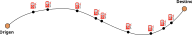
- Tenemos que realizar una ruta por carretera. A lo largo del camino hay varias gasolineras, que dividen el camino en varios tramos. Conocemos la distancia de cada tramo.
- El depósito del coche permite realizar, como mucho, una distancia \(l\) sin repostar.
Si queremos hacer la ruta desde origen a destino, ¿cuál es el mínimo número de paradas que tenemos que realizar para repostar?
Especificación del problema
Suponemos que tenemos un vector \(T[0..n)\) con la distancia de cada tramo.
- \(T[0]:\) distancia desde origen a primera gasolinera.
- \(T[i]:\) distancia desde gasolinera \(i\)-ésima hasta la siguiente \((0 < i < n-1)\).
- \(T[n-1]:\) distancia desde última gasolinera hasta destino.
Suponemos que, \(T[i] \leq l\) para todo \(i \in \{0,\ldots,n-1\}\).
- Es decir, siempre es posible recorrer cualquier tramo con el depósito lleno.
Suponemos que partimos del origen con el depósito lleno.
Estrategia voraz
Recorremos todos los tramos desde el origen hasta el destino.
Llevamos la cuenta de la distancia recorrida desde el último repostaje, o desde el inicio de la ruta.
Si podemos recorrer el siguiente tramo sin tener que repostar, lo recorremos.
En caso contrario, repostamos y recorremos el siguiente tramo.
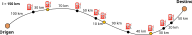
Implementación en C++
int gasolineras(const vector<int> &t, int l)
{
int n = t.size();
int num_paradas = 0;
int
distancia_restante = l; Distancia que
podemos recorrer sin repostar
for
(int i = 0; i <
n; i++) {
if (distancia_restante < t[i]) {
Si necesitamos repostar para el siguiente
tramo, lo
hacemos
num_paradas++;
distancia_restante =
l;
}
distancia_restante -=
t[i];
}
return num_paradas;
}
Coste en tiempo: \(\Theta(n)\), donde \(n\) es el número de tramos.
Demostración de optimalidad
Espacio de soluciones
- Numeramos los tramos desde \(0\) hasta \(n-1\).
Una solución es un vector \(X[0..n)\) de valores booleanos.
- \(X[i] = \texttt{true} \Longleftrightarrow\) repostamos antes de recorrer el tramo \(i\)-ésimo.
- Por convenio, suponemos que \(X[0] = \mathit{true}\), es decir, consideramos que hemos rellenado el depósito en el origen, pero esa parada no cuenta como repostaje.
El número de paradas de una solución se define del siguiente modo:
\[\small \mathit{numParadas}(X) = (\# i : 0 < i < n : X[i] = \mathit{true}) \]
Decimos que \(X \sqsubseteq X'\) si y solo si \(\mathit{numParadas}(X) \geq \mathit{numParadas}(X')\).
Reducción de diferencias
- Dadas dos soluciones \(X\) e \(Y\), definimos su distancia como la distancia que hay desde la primera diferencia hasta el final del vector.
\[\small \begin{array}{rcl} d(X, Y) & = & 0 \quad \text{si } X = Y\\ d(X, Y) & = & n - \left(\min~p : 0 \leq p < n \wedge X[p] \neq Y[p] : p \right) \quad \text{ e.o.c.} \end{array} \]
Reducción por diferencias
- Sea \(V\) la solución obtenida mediante el algoritmo voraz y \(O\) una solución óptima.
- Sea \(i\) la primera posición en la que difieren \((0 < i < n)\).
| i | ||||||||
| \(V\) | T | |||||||
|---|---|---|---|---|---|---|---|---|
| = | = | = | = | ≠ | ||||
| \(O\) | T |
- Caso 1: \(V[i] = \mathit{true}\), \(O[i] = \mathit{false}\)
- Caso 2: \(V[i] = \mathit{false}\), \(O[i] = \mathit{true}\)
Caso 1: \(V[i] = \mathit{true}\), \(O[i] = \mathit{false}\)
| i | ||||||||
| \(V\) | T | T | ||||||
|---|---|---|---|---|---|---|---|---|
| = | = | = | = | ≠ | ||||
| \(O\) | T | F |
Este caso no es posible
Si la solución voraz hizo una parada antes de hacer el tramo \(i\), es porque no se podía recorrer el tramo \(i\) sin quedarse sin gasolina.
Como la solución óptima ha hecho los mismos repostajes antes de llegar al tramo \(i\), si decidiese no repostar en \(i\) no sería factible.
Caso 2: \(V[i] = \mathit{false}\), \(O[i] = \mathit{true}\)
| i | ||||||||
| \(V\) | T | F | ||||||
|---|---|---|---|---|---|---|---|---|
| = | = | = | = | ≠ | ||||
| \(O\) | T | T |
Si \(i + 1 < n\), distinguimos casos según \(O[i+1]\).
- Caso 2.1: \(O[i+1] = \mathit{true}\)
- Caso 2.2: \(O[i+1] = \mathit{false}\)
Caso 2.1: \(O[i+1] = true\)
| i | ||||||||
| \(V\) | T | F | ||||||
|---|---|---|---|---|---|---|---|---|
| = | = | = | = | ≠ | ||||
| \(O\) | T | T | T |
Este caso no es posible
Podríamos obtener una solución \(O'\) igual de factible cambiando la posición \(i\) por \(\mathit{false}\):
| i | ||||||||
| \(O'\) | T | F | T |
|---|
Sin embargo, \(O'\) realiza menos paradas que \(O\) contradiciendo el hecho de que \(O\) es óptima.
Caso 2.2: \(O[i+1] = \mathit{false}\)
| i | ||||||||
| \(V\) | T | F | ||||||
|---|---|---|---|---|---|---|---|---|
| = | = | = | = | ≠ | ||||
| \(O\) | T | T | F |
- Sea \(O'\) la solución que resulta de intercambiar las posiciones \(i\) e \(i+1\) en \(O\):
| i | ||||||||
| \(O'\) | T | F | T |
|---|
\(O'\) es factible, ya que la solución voraz es factible sin necesidad de hacer parada en \(i\). Además, es igual de óptima que \(O\), ya que realiza el mismo número de paradas.
Además, \(V[i] = O'[i]\), por lo que se reduce la distancia entre la solución voraz y óptima, demostrando la hipótesis de reducción.
| i | ||||||||
| \(V\) | T | F | ||||||
|---|---|---|---|---|---|---|---|---|
| = | = | = | = | = | = | = | ≠ | |
| \(O\) | T | T |
Si estamos en el caso 2, pero \(i + 1 = n\), no podemos mirar qué hay en la posición \(i + 1\).
Sin embargo, este caso tampoco es posible, porque podemos reemplazar el último \(\mathit{true}\) de la solución óptima por un \(\mathit{false}\):
| i | ||||||||
| \(O'\) | T | F |
|---|
La solución \(O'\) sigue siendo factible (porque la voraz no hace parada en \(i\) y también lo es), y es más óptima que \(O\), contradiciendo el hecho de que \(O\) es óptima.
6.4El problema del cambio de
monedas
(versión voraz)
El problema del cambio de monedas
Tenemos varios tipos de moneda, cada uno con un valor.
Disponemos de una cantidad ilimitada de monedas de cada tipo.
Queremos pagar una cantidad \(c\) utilizando estas monedas.

¿Cómo puedo pagar la cantidad \(c\) utilizando el mínimo número de monedas?
- Ya sabemos resolver este problema mediante programación dinámica.
¿Existe una solución voraz a este problema?
Solución voraz al problema del cambio
- Un sistema monetario canónico es aquel para el cual se puede pagar cualquier cantidad utilizando el mínimo número de monedas utilizando la siguiente estrategia voraz:
Tomar en cada paso la moneda de mayor valor disponible que no exceda de la cantidad restante a pagar
Ejemplo: sistema monetario de la Eurozona:
- Queremos pagar la cantidad de 1.92 €
- Ponemos moneda de 1 € (cantidad restante: 0.92 €)
- Ponemos moneda de 50 cts (cantidad restante: 0.42 €)
- Ponemos moneda de 20 cts (cantidad restante: 0.22 €)
- Ponemos moneda de 20 cts (cantidad restante: 0.02 €)
- Ponemos moneda de 2 cts (cantidad restante: 0.00 €)
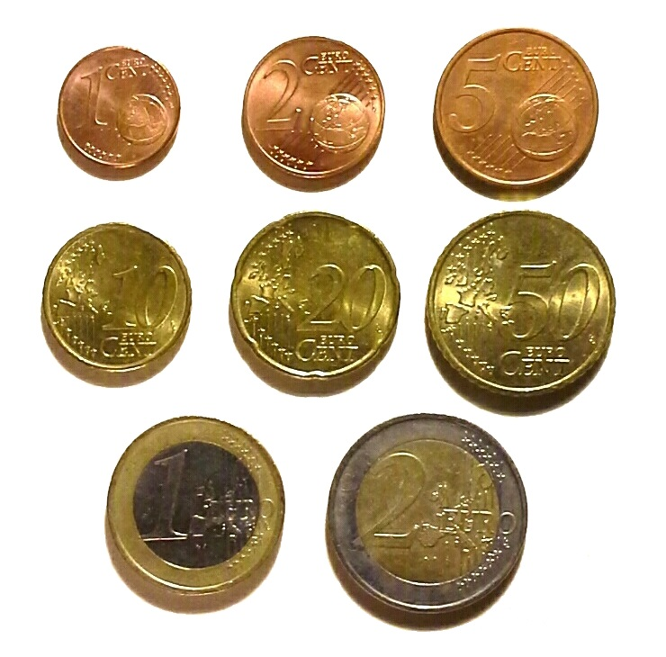
Implementación en C++
// Precondición: m está ordenado
de mayor a menor
pair<bool, vector<int>> cambio_monedas(const vector<int> &m, int c)
{
vector<int> result(m.size(), 0);
int
cantidad_restante = c;
int i = 0;
while (i < m.size()
&& cantidad_restante > 0)
{
if (m[i] <= cantidad_restante)
{
result[i]++; Utilizamos una moneda más de valor
m[i]
cantidad_restante -= m[i];
}
else {
i++; Pasamos a la siguiente
moneda
}
}
if
(cantidad_restante == 0)
{
return {true,
result};
} else {
return
{false, {}};
}
}
Condición suficiente para un sistema canónico
Supongamos que tenemos \(n\) tipos de monedas de valores \(m_1, \ldots, m_n\), donde cada moneda tiene un valor múltiplo del de la siguiente de menor valor. Es decir, \(m_i\) es múltiplo de \(m_{i+1}\) para cada \(i \in \{1, \ldots, n-1\}\).
Si es posible pagar la cantidad \(c\) con la estrategia voraz, esta estrategia minimiza el número de monedas necesario (demostración)
Si no es posible pagar la cantidad \(c\) con la estrategia voraz, entonces no es posible pagar la cantidad \(c\) con este sistema monetario.
- Ejemplo: monedas de valores 10, 5 y 1.
- El sistema monetario de la Eurozona no cumple esta condición.
Otra condición suficiente (*)
Supongamos que tenemos \(n\) tipos de monedas de valores \(m_1, \ldots, m_n\), ordenadas de manera ascendente con \(m_1 = 1\).
Denotamos por \(G(c)\) la cantidad de monedas necesaria devuelta por la estrategia voraz para pagar \(c\).
Si para toda cantidad \(c\) tal que \(m_3 + 1 < c < m_{n-1} + m_n\) y todo \(i\) tal que \(m_i < c\) se cumple \[ G(c) \leq G(c - m_i) + 1, \]
entonces el sistema monetario es canónico (Kozen y Zaks, 1994).
El sistema monetario de la Eurozona sí cumple esta condición.
6.5El problema de la mochila real
(versión
voraz)
Descripción del problema
- Tenemos una mochila con una capacidad máxima \(m\).
- Tenemos varios objetos distintos, cada uno con un peso y con un valor (ambos pueden ser números reales).
- Los objetos pueden fraccionarse antes de meterlos
en la mochila.
- Por ejemplo, podemos meter la mitad de un objeto, o tres cuartas partes de un objeto.
- En este caso, el objeto solo ocupa en la mochila una fracción de su peso, y solo aporta una fracción de su valor.
¿Qué objetos (o fracciones de objetos) debemos tomar para maximizar el valor total de lo que llevamos sin exceder la capacidad de la mochila?
Descripción del problema
Supongamos dos vectores \(P[0..n)\) y \(V[0..n)\), tales que, para todo \(i \in \{0..n-1\}\):
- \(P[i] > 0\) es el peso del objeto \(i\)-ésimo.
- \(V[i] > 0\) es el valor del objeto \(i\)-ésimo.
Suponemos que la mochila tiene capacidad \(m\).
Queremos encontrar, para cada objeto \(i\), un valor real \(X[i] \in [0,1]\) tal que se maximice \(\sum_{i = 0}^{n-1} V[i] * X[i]\) sujeto a la restricción \(\sum_{i = 0}^{n-1} P[i] * X[i] \leq m\).
Estrategia voraz
Para cada \(i\) tal que \(0 \leq i < n\), definimos la densidad de un objeto (denotada por \(D[i]\)) como el cociente entre el valor del objeto y su peso. \[ D[i] = \frac{V[i]}{P[i]} \]
La estrategia voraz recorre los objetos en orden decreciente de densidad.
Si el objeto actual cabe entero en el espacio restante de la mochila, se mete en su totalidad.
Si no cabe entero, se inserta la fracción necesaria hasta llenar la mochila.
Ejemplo
Suponemos que la capacidad de la mochila es \(m = 19\) y tenemos los siguientes objetos.
| Objeto | 0 | 1 | 2 | 3 |
|---|---|---|---|---|
| Valor | 15 | 10 | 20 | 15 |
| Peso | 10 | 4 | 20 | 30 |
| Densidad | 1.5 | 2.5 | 1.0 | 0.5 |
- Insertamos el objeto 1 en la mochila (capacidad restante: 15)
- Insertamos el objeto 0 en la mochila (capacidad restante: 5)
- El objeto 2 no cabe en la mochila, pero podemos insertar \(\frac{5}{20} = \frac{1}{4}\) parte del mismo.
Solución: \(X = [1, 1, 0.25,0]\). Valor obtenido: \(15 + 10 + 20\frac{1}{4} = 30\)
Implementación en C++
La implementación es más eficiente si mantenemos los objetos en orden decreciente de densidad.
Para no alterar los vectores originales, construimos un vector de índices
[0, 1, ..., n-1]y lo ordenamos utilizando la siguiente relación de orden:ise coloca antes quejen el vector ordenado si la densidad del objetoi-ésimo es mayor que la del objetoj-ésimo.
vector<double> mochila_real(const vector<double> &peso, const vector<double> &valor, double capacidad) {
int n = peso.size();
vector<double>
ids(n); Vector de tamaño
n
iota(ids.begin(), ids.end(), 0); ids =
[0, 1, 2, ..., n-1]
sort(ids.begin(),
ids.end(), [&valor, &peso](int i,
int j) {
return
valor[i] / peso[i] > valor[j] / peso[j]; Función de
comparación
});
...
Con el vector ids ya ordenado, lo recorremos para
construir la solución óptima.
...
vector<double> result(n, 0.0);
double capacidad_restante = capacidad;
int i = 0;
while (i < n
&& capacidad_restante > 0)
{
int actual = ids[i];
double fraccion = min(1.0,
capacidad_restante / peso[actual]);
result[actual] =
fraccion;
capacidad_restante -= fraccion *
peso[actual];
i++;
}
return
result;
}
Coste en tiempo: \(\Theta(n \log n)\) (ordenación previa) + \(\Theta(n)\) (bucle)
TOTAL: \(\Theta(n \log n)\) donde \(n\) es el número de objetos.
Demostración de optimalidad
Demostración de optimalidad (*)
Suponemos que los objetos están en orden decreciente de densidad.
Sea \(X\) la solución obtenida mediante la estrategia voraz. Esta solución tiene todas las componentes en 1 hasta una posición \(j\), donde \(X[j] < 1\).
| j | ||||||||
| \(X\) | 1 | 1 | 1 | <1 | 0 | 0 | 0 | 0 |
|---|
- Sea \(O\) una solución óptima cualquiera. Sin pérdida de generalidad, suponemos que \(X\) y \(O\) llenan completamente la mochila.
- Vamos a demostrar, que para todo \(i\):
\[ (X[i] - O[i]) * \frac{V[i]}{P[i]} \geq (X[i] - O[i]) * \frac{V[j]}{P[j]} \]
\[ (X[i] - O[i]) * \frac{V[i]}{P[i]} \geq (X[i] - O[i]) * \frac{V[j]}{P[j]} \]
Caso 1: \(i < j\). Se tiene \(X[i] = 1 \geq O[i]\), por lo que \(X[i] - O[i] \geq 0\). Además, como los objetos están ordenados por densidad, \(\frac{V[i]}{P[i]} \geq \frac{V[j]}{P[j]}\). Multiplicando por \((X[i] - O[i])\) a ambos lados se consigue la desigualdad indicada.
Caso 2: \(i = j\). Trivial.
Caso 3: \(i > j\). Se tiene \(X[i] = 0 \leq O[i]\). Además, \(\frac{V[i]}{P[i]} \leq \frac{V[j]}{P[j]}\). Multiplicando por \(X[i] - O[i]\) (que es un número ≤ 0) a ambos lados, se obtiene la desigualdad indicada.
Demostramos que el valor de la solución voraz coincide con el de la solución óptima. Calculamos la diferencia entre ambos valores.
\[\small\begin{array}{rcl} \left(\sum_{i=0}^{n-1} X[i] * V[i]\right) - \left(\sum_{i=0}^{n-1} O[i] * V[i]\right) & = & \sum_{i=0}^{n-1} (X[i]-O[i])* V[i] \\ & = & \sum_{i=0}^{n-1} (X[i]-O[i])* P[i] * \frac{V[i]}{P[i]} \\ & \geq & \sum_{i=0}^{n-1} (X[i]-O[i])* P[i] * \frac{V[j]}{P[j]} \\ & = & \frac{V[j]}{P[j]} * \sum_{i=0}^{n-1} (X[i]-O[i])* P[i] \\ & = & \frac{V[j]}{P[j]} * \left(\sum_{i=0}^{n-1} (X[i]*P[i]) - \sum_{i=0}^{n-1} (O[i]* P[i])\right) \\ & = & \frac{V[j]}{P[j]} * \left(m - m\right) \\ & = & 0 \end{array} \]
Por tanto, la solución voraz consigue el mismo valor que la óptima.
6.6Interludio: colas de prioridad
Colas de prioridad
Una cola de prioridad es un tipo abstracto de datos que permite almacenar una colección de elementos.
Cada elemento tiene una prioridad asignada.
Los elementos se pueden introducir en la cola de prioridad en cualquier orden.
A la hora de extraer los elementos de la cola, se extraen según su prioridad:
- Cola de prioridad de máximos: Los elementos se extraen desde el más prioritario hasta el menos prioritario.
- Cola de prioridad de mínimos: Los elementos se extraen desde el menos prioritario hasta el más prioritario.
La clase priority_queue<T>
Pertenece a las bibliotecas de C++.
- Requiere incluir el fichero de cabecera
<queue>.
- Requiere incluir el fichero de cabecera
Implementa las colas de prioridad que contienen elementos de tipo
T.Por defecto, utiliza el operador
>para determinar la prioridad de los objetos de la cola.xes más prioritario quezsi y solo six > z.- Por tanto, es una cola de prioridad de máximos.
Operaciones de priority_queue<T>
pq.push(x)-
inserta el elemento
x. pq.pop()- elimina el elemento más prioritario.
pq.top()- devuelve el elemento más prioritario (sin eliminarlo).
pq.empty()-
devuelve
truesi la cola está vacía. pq.size()- devuelve el número de elementos.
priority_queue<int> pq; // pq = {}
pq.push(10); // pq =
{10}
pq.push(5); // pq =
{10, 5}
pq.push(12); // pq =
{10, 5, 12}
pq.push(7); // pq =
{10, 5, 12, 7}
cout
<< pq.top() << endl; // Imprime 12
pq.pop(); // pq = {10, 5, 7}
cout
<< pq.top() << endl; // Imprime 10
pq.push(11); // pq =
{10, 5, 7, 11}
cout
<< pq.top() << endl; // Imprime 11
pq.pop(); // pq = {10, 5, 7}
pq.pop(); // pq = {5, 7}
cout << pq.top() << endl;
// Imprime 7
Implementación de las colas de prioridad (*)
Se suelen utilizar montículos binarios, representados mediante vectores.
Más información: https://youtu.be/mvaLy_ta3Qw
-
Ricardo Peña
Algoritmos y estructuras de datos : con programas verificados en Dafny
Garceta D.L., 2019
Sección 3.1. -
Thomas Cormen, Charles E. Leiserson, Ronald L. Rivest, Clifford
Stein
Introduction to algorithms, fourth edition
The MIT Press, 2022
Capítulo 6
Coste de las operaciones
Si \(n\) es el número de elementos de la cola de prioridad:
| Operación | Coste |
|---|---|
push |
\(\Theta(\log n)\) |
pop |
\(\Theta(\log n)\) |
top |
\(\Theta(1)\) |
empty |
\(\Theta(1)\) |
size |
\(\Theta(1)\) |
Resumen: las operaciones modificadoras tienen coste \(\Theta(\log n)\) y las consultoras tienen coste \(\Theta(1)\).
Colas de prioridades variables
(IndexPQ)
Colas de prioridades variables
Variante de las colas de prioridad, que permiten modificar la prioridad de un elemento ya existente.
Cambios con respecto a las colas de prioridad anteriores:
- La prioridad ya no es una característica intrínseca
del elemento. Es decir, la operación
pushya no recibe solamente el elemento a insertar, sino que también recibe su prioridad en un parámetro aparte. - Los elementos que pueden insertarse en la cola de
prioridad son valores numéricos en el rango
[0..N). El valor deNse determina al crear la cola de prioridad. - Existe una operación
pq.update(x, p)que modifica la prioridad de un elemento.
- La prioridad ya no es una característica intrínseca
del elemento. Es decir, la operación
Implementación en el Campus Virtual:
IndexPQ.h
Operaciones de colas de prioridades variables
IndexPQ(N)-
constructor, construye una cola de mínimos que permite
almacenar números en el rango
[0..N). pq.push(x, p)-
inserta el elemento
xcon prioridadp. pq.update(x, p)-
actualiza la prioridad de
xap. Sixno está en la cola de prioridad, actúa comopush. pq.top()-
devuelve un par (
x,p) con el elemento más prioritario y su prioridadp. pq.pop()pq.empty()pq.size()
IndexPQ<int> pq(10);
pq.push(7,
200);
pq.push(3, 150);
pq.push(4,
300);
auto [x1, p1] =
pq.top();
cout << x1 << endl; // Imprime 3
pq.update(4, 100);
auto [x2, p2] =
pq.top();
cout << x2 << endl; // Imprime 4
pq.update(1, 20); // Inserta el valor 1
auto [x3, p3] =
pq.top();
cout << x3 << endl; // Imprime 1
Implementación (*)
También se suelen utilizar montículos binarios, representados mediante vectores.
No obstante, la operación
updaterequiere saber dónde se encuentra el elemento a actualizar dentro del montículo.Para ello, existe un vector adicional (de tamaño
N) que indica la posición del montículo en el que se encuentra cada elemento.Más información: https://youtu.be/dVwcKjXsqZc
Coste de las operaciones
Si \(n\) es el número de elementos de la cola de prioridad y \(N\) es el rango de elementos que pueden introducirse.
| Operación | Coste |
|---|---|
| constructor | \(\Theta(N)\) |
push |
\(\Theta(\log n)\) |
update |
\(\Theta(\log n)\) |
pop |
\(\Theta(\log n)\) |
top |
\(\Theta(1)\) |
empty |
\(\Theta(1)\) |
size |
\(\Theta(1)\) |
6.7Búsqueda de caminos mínimos:
algoritmo
de Dijkstra
Búsqueda de caminos mínimos
- Tenemos un grafo dirigido valorado con \(n\) vértices.
- Suponemos que las aristas tienen costes no negativos.
- Distinguimos un vértice del grafo, al que denominamos
origen, que será el vértice
0.
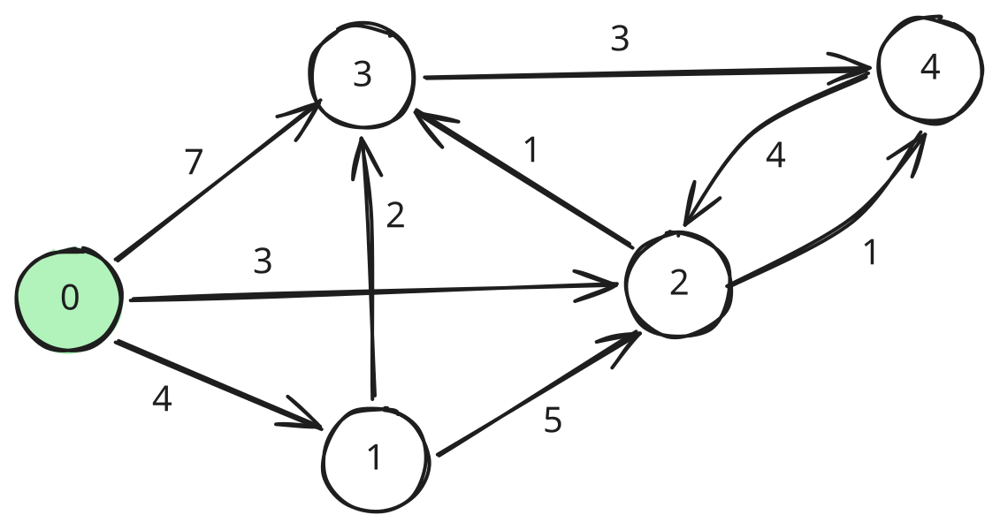
¿Cuál es el camino de coste mínimo desde el vértice origen al resto de vértices?
Respuesta del algoritmo
El algoritmo devolverá dos vectores de tamaño \(n\).
dist[0..n): contiene las distancias mínimas desde el origen.dist[i]≡ distancia mínima desde el origen hasta el vértice \(i\).- Obviamente
dist[0] = 0. - El resto de posiciones se inicializarán a \(+\infty\).
ant[0..n): permite reconstruir los caminos mínimos.ant[i]≡ vértice anterior aien el camino mínimo que va desde el origen ai.- Las posiciones se inicializan a un valor arbitrario
(por ejemplo,
-1).
Idea clave: relajación de aristas
Suponemos que
dist[u]ydist[w]contienen los costes de los caminos mínimos encontrados (hasta el momento) desde el origen hasta los vérticesuyw, respectivamente.Supongamos que existe una arista de
wau, de costev.
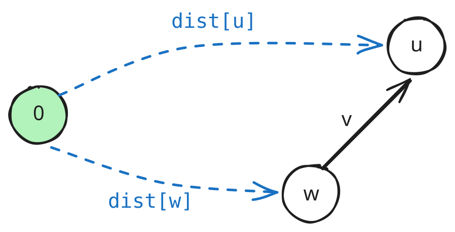
Si se cumple que
dist[w] + v < dist[u], hemos encontrado un camino desde el origen auque tiene mejor coste que el que conocíamos hasta ahora.Actualizamos camino mínimo: dist[u] := dist[w] + v; ant[u] := w;
Esquema del algoritmo
Tenemos un bucle que realiza lo siguiente:
- Buscamos el vértice
wcon menordist[w]que no haya sido procesado hasta ahora.- Inicialmente, este vértice será el origen.
- Recorremos cada arista \(\texttt{w} \stackrel{\texttt{v}}{\longrightarrow}
\texttt{u}\) que salga de
w.- Para cada una de ellas, comprobamos si
dist[w] + v < dist[u]. En caso afirmativo, actualizamosdist[u]yant[u]como hemos visto anteriormente.
- Para cada una de ellas, comprobamos si
- Marcamos el vértice
wcomo procesado y volvemos al paso1.
El algoritmo termina cuando no quedan vértices alcanzables desde el origen por procesar.
Ejemplo
i |
dist[i] |
ant[i] |
|---|---|---|
0 |
0 |
|
1 |
+∞ |
|
2 |
+∞ |
|
3 |
+∞ |
|
4 |
+∞ |
- Comenzamos con el vértice
0, que es el mínimo dedist. Tiene tres aristas
\[ \texttt{0} \stackrel{\texttt{4}}{\longrightarrow} \texttt{1} \qquad \texttt{0} \stackrel{\texttt{3}}{\longrightarrow} \texttt{2} \qquad \texttt{0} \stackrel{\texttt{7}}{\longrightarrow} \texttt{3} \]
Ejemplo
i |
dist[i] |
ant[i] |
|---|---|---|
0 |
0 |
|
1 |
+∞ |
|
2 |
+∞ |
|
3 |
+∞ |
|
4 |
+∞ |
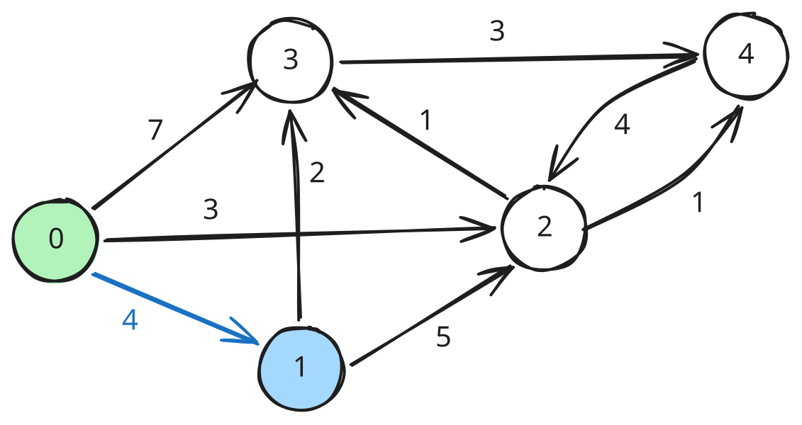
Arista \(\texttt{0} \stackrel{\texttt{4}}{\longrightarrow} \texttt{1}\):
- Condición de relajación:
dist[0] + 4 < dist[1]✅ - Actualizamos
dist[1] := 4; ant[1] := 0;
- Condición de relajación:
Ejemplo
i |
dist[i] |
ant[i] |
|---|---|---|
0 |
0 |
|
1 |
4 |
0 |
2 |
+∞ |
|
3 |
+∞ |
|
4 |
+∞ |
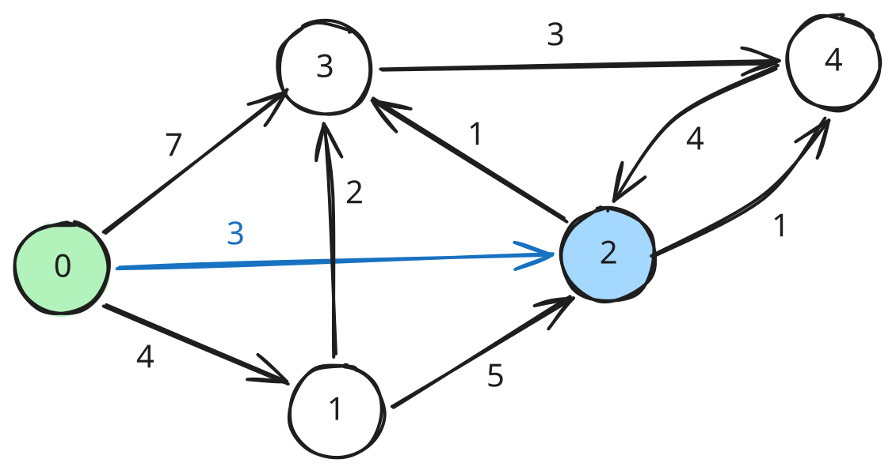
Arista \(\texttt{0} \stackrel{\texttt{3}}{\longrightarrow} \texttt{2}\):
- Condición de relajación:
dist[0] + 3 < dist[2]✅ - Actualizamos
dist[2] := 3; ant[2] := 0;
- Condición de relajación:
Ejemplo
i |
dist[i] |
ant[i] |
|---|---|---|
0 |
0 |
|
1 |
4 |
0 |
2 |
3 |
0 |
3 |
+∞ |
|
4 |
+∞ |
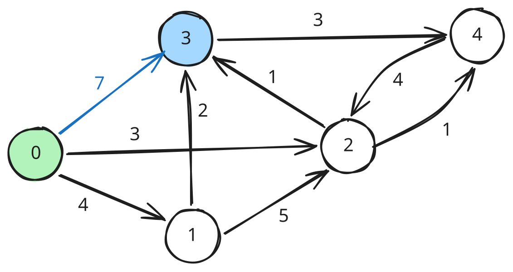
Arista \(\texttt{0} \stackrel{\texttt{7}}{\longrightarrow} \texttt{3}\):
- Condición de relajación:
dist[0] + 7 < dist[3]✅ - Actualizamos
dist[3] := 7; ant[3] := 0;
- Condición de relajación:
Ejemplo
i |
dist[i] |
ant[i] |
|---|---|---|
0 |
0 |
|
1 |
4 |
0 |
2 |
3 |
0 |
3 |
7 |
0 |
4 |
+∞ |
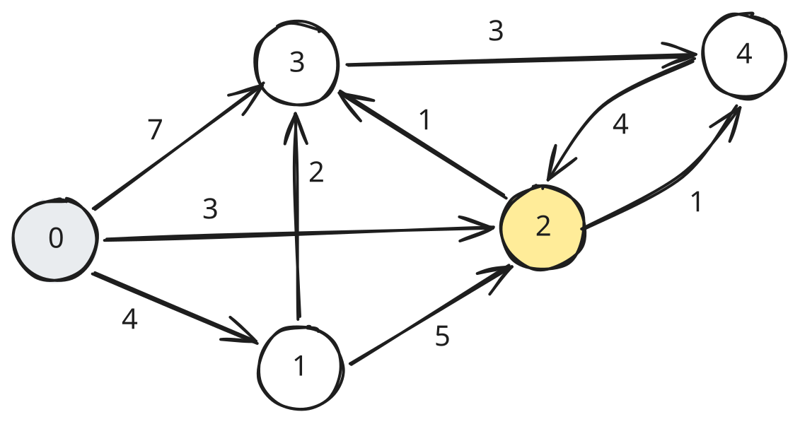
- Marcamos el vértice
0como procesado y seleccionamos el vértice2, que tiene menor distancia al origen. - Existen dos aristas que salen del vértice
2: \(\texttt{2} \stackrel{\texttt{1}}{\longrightarrow} \texttt{3}, \texttt{2} \stackrel{\texttt{1}}{\longrightarrow} \texttt{4}\)
Ejemplo
i |
dist[i] |
ant[i] |
|---|---|---|
0 |
0 |
|
1 |
4 |
0 |
2 |
3 |
0 |
3 |
7 |
0 |
4 |
+∞ |
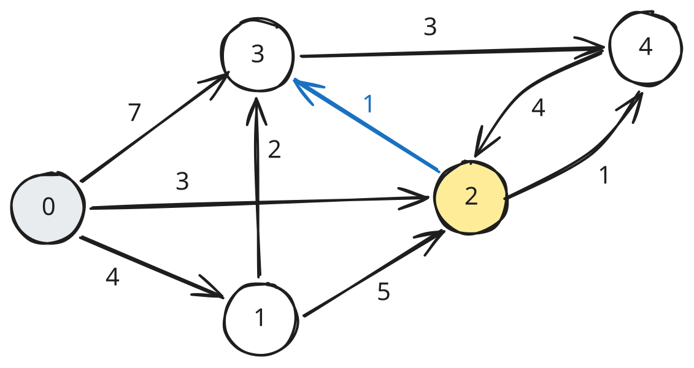
Arista \(\texttt{2} \stackrel{\texttt{1}}{\longrightarrow} \texttt{3}\):
- Condición de relajación:
dist[2] + 1 < dist[3]✅ - Actualizamos
dist[3] := 4; ant[3] := 2;
- Condición de relajación:
Ejemplo
i |
dist[i] |
ant[i] |
|---|---|---|
0 |
0 |
|
1 |
4 |
0 |
2 |
3 |
0 |
3 |
4 |
2 |
4 |
+∞ |
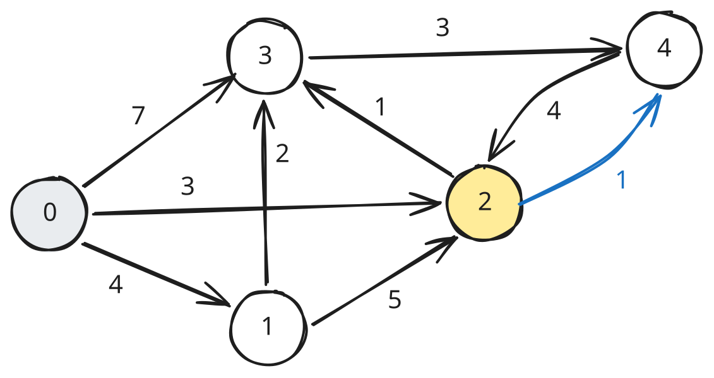
Arista \(\texttt{2} \stackrel{\texttt{1}}{\longrightarrow} \texttt{4}\):
- Condición de relajación:
dist[2] + 1 < dist[4]✅ - Actualizamos
dist[4] := 4; ant[4] := 2;
- Condición de relajación:
Ejemplo
i |
dist[i] |
ant[i] |
|---|---|---|
0 |
0 |
|
1 |
4 |
0 |
2 |
3 |
0 |
3 |
4 |
2 |
4 |
4 |
2 |
- Marcamos el vértice
2como procesado y seleccionamos el vértice1, que es el que tiene menor distancia al origen (empatado con el resto). - Existen dos aristas que salen del vértice
1: \(\texttt{1} \stackrel{\texttt{2}}{\longrightarrow} \texttt{3}, \texttt{1} \stackrel{\texttt{5}}{\longrightarrow} \texttt{2}\)
Ejemplo
i |
dist[i] |
ant[i] |
|---|---|---|
0 |
0 |
|
1 |
4 |
0 |
2 |
3 |
0 |
3 |
4 |
2 |
4 |
4 |
2 |
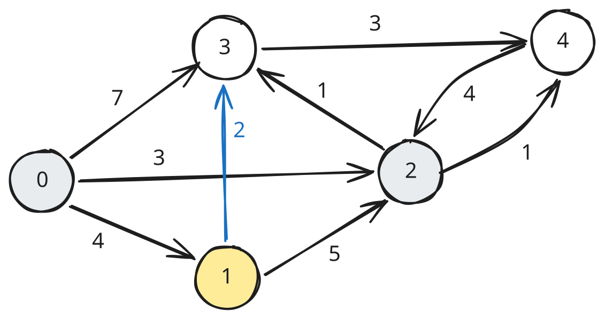
Arista \(\texttt{1} \stackrel{\texttt{2}}{\longrightarrow} \texttt{3}\):
- Condición de relajación:
dist[1] + 2 < dist[3]❌
- Condición de relajación:
Ejemplo
i |
dist[i] |
ant[i] |
|---|---|---|
0 |
0 |
|
1 |
4 |
0 |
2 |
3 |
0 |
3 |
4 |
2 |
4 |
4 |
2 |
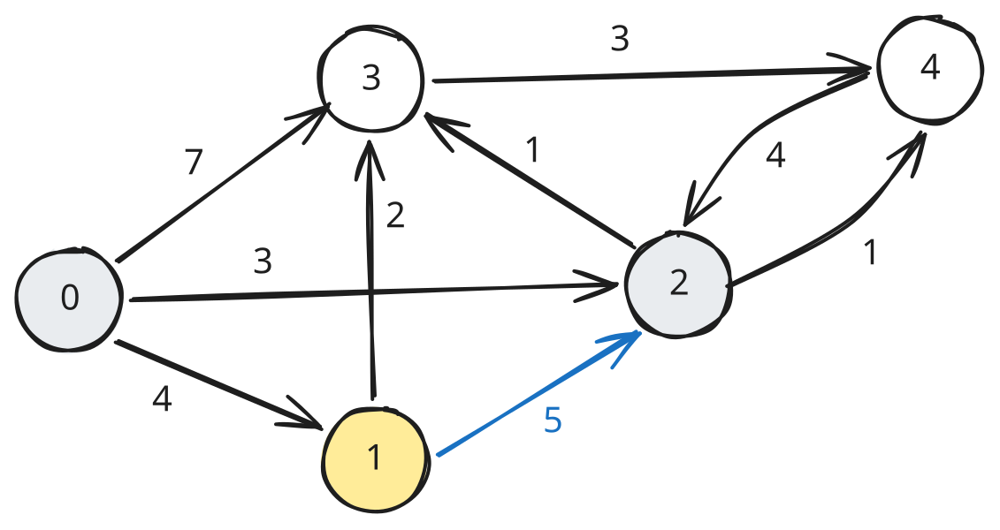
Arista \(\texttt{1} \stackrel{\texttt{5}}{\longrightarrow} \texttt{2}\):
- Condición de relajación:
dist[1] + 5 < dist[2]❌ - Para los vértices ya procesados, el valor
dist[i]es definitivo y no se podrá mejorar.
- Condición de relajación:
Ejemplo
i |
dist[i] |
ant[i] |
|---|---|---|
0 |
0 |
|
1 |
4 |
0 |
2 |
3 |
0 |
3 |
4 |
2 |
4 |
4 |
2 |
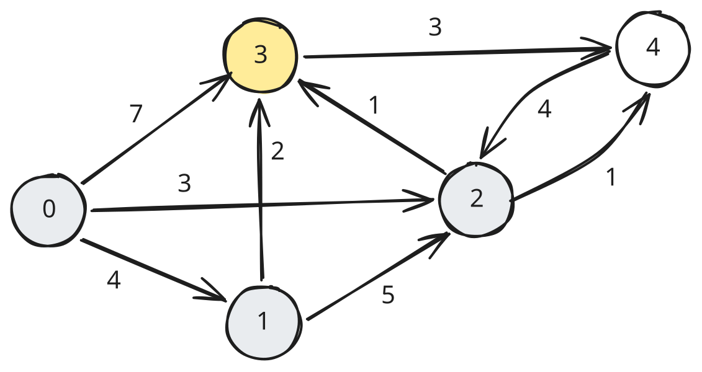
- Marcamos el vértice
1como procesado y seleccionamos el vértice3. - Existe solo una arista que sale del vértice
3(\(\texttt{3} \stackrel{\texttt{3}}{\longrightarrow} \texttt{4}\)).
Ejemplo
i |
dist[i] |
ant[i] |
|---|---|---|
0 |
0 |
|
1 |
4 |
0 |
2 |
3 |
0 |
3 |
4 |
2 |
4 |
4 |
2 |
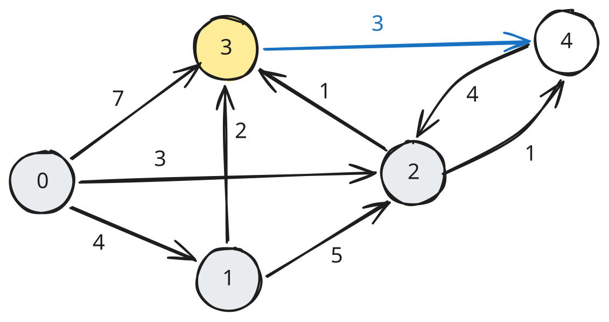
Arista \(\texttt{3} \stackrel{\texttt{3}}{\longrightarrow} \texttt{4}\):
- Condición de relajación:
dist[3] + 3 < dist[4]❌
- Condición de relajación:
Ejemplo
i |
dist[i] |
ant[i] |
|---|---|---|
0 |
0 |
|
1 |
4 |
0 |
2 |
3 |
0 |
3 |
4 |
2 |
4 |
4 |
2 |
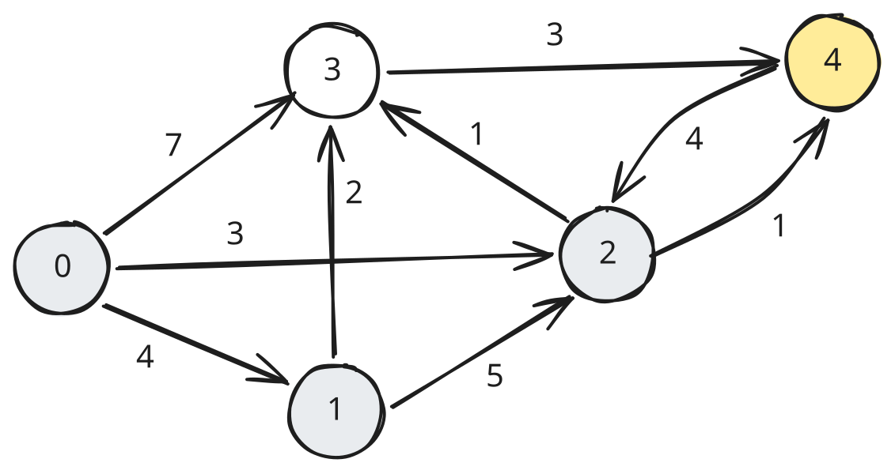
- Marcamos el vértice
3como procesado y seleccionamos el vértice4. - Existe solo una arista que sale del vértice
4(\(\texttt{4} \stackrel{\texttt{4}}{\longrightarrow} \texttt{2}\)).
Ejemplo
i |
dist[i] |
ant[i] |
|---|---|---|
0 |
0 |
|
1 |
4 |
0 |
2 |
3 |
0 |
3 |
4 |
2 |
4 |
4 |
2 |
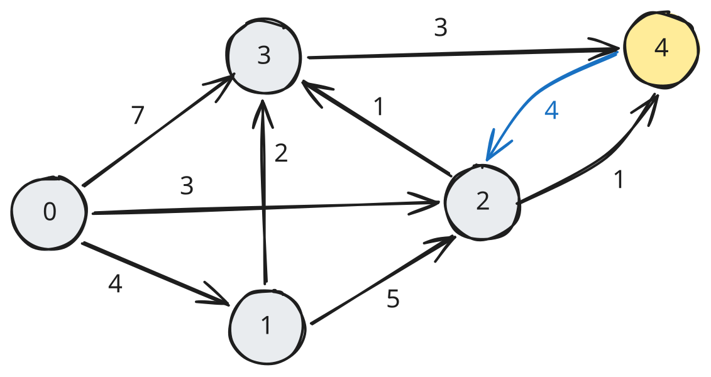
Arista \(\texttt{4} \stackrel{\texttt{4}}{\longrightarrow} \texttt{2}\):
- Condición de relajación:
dist[4] + 4 < dist[2]❌
- Condición de relajación:
Ejemplo
i |
dist[i] |
ant[i] |
|---|---|---|
0 |
0 |
|
1 |
4 |
0 |
2 |
3 |
0 |
3 |
4 |
2 |
4 |
4 |
2 |
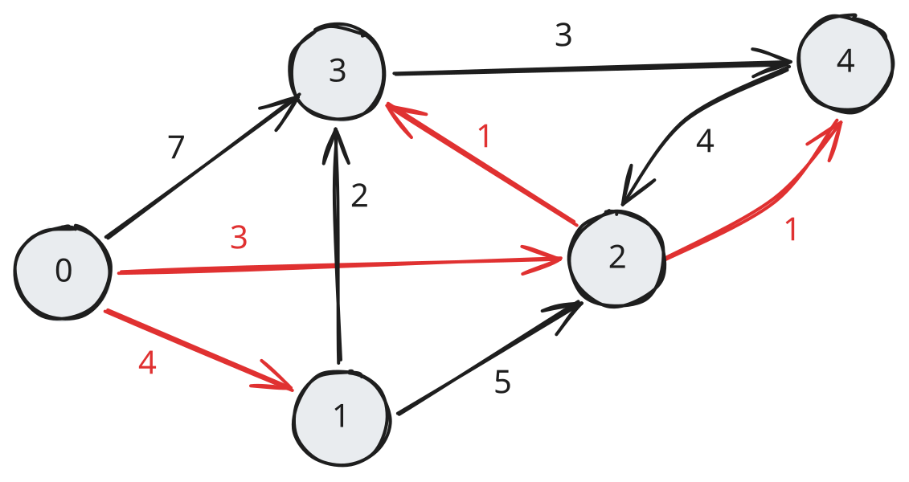
- Todos los vértices han sido procesados.
- Se muestran en rojo los caminos mínimos desde el vértice
0hasta el resto de vértices.
Corrección del algoritmo
Proposición auxiliar
Suponemos un grafo
Gy un vértice origens.El vector
dist[0..n)contiene los costes de los caminos mínimos desdeshasta el resto de vértices si y solo si el vector cumple las siguientes tres condiciones:dist[s] = 0- Para todo vértice
udeG,dist[u]contiene el coste de algún camino desdeshastau(no necesariamente el de mínimo coste). - Para toda arista \(\texttt{u}
\stackrel{\texttt{v}}{\longrightarrow} \texttt{w}\) de
G, se cumpledist[w] ≤ dist[u] + v.
Demostración (\(\Rightarrow\))
dist[0..n) contiene solución óptima \(\Rightarrow\) dist[0..n)
cumple condiciones (1), (2), (3)
La demostración de las condiciones (1) y (2) es trivial.
Demostramos el contrarrecíproco de (3). Supongamos que esta condición no se cumple. Es decir, existe una arista \(\texttt{u} \stackrel{\texttt{v}}{\longrightarrow} \texttt{w}\) en
Gtal quedist[w] > dist[u] + vEntonces, hemos encontrado un camino desde
shastawque tiene menor coste que el indicado endist[w].- Ese camino es el que va desde
shastau, y luego utiliza la arista \(\texttt{u} \stackrel{\texttt{v}}{\longrightarrow} \texttt{w}\).
- Ese camino es el que va desde
Por tanto
dist[w]no contiene el camino de mejor coste hataw.
Demostración (\(\Leftarrow\))
dist[0..n) contiene solución óptima \(\Leftarrow\) dist[0..n) cumple
condiciones (1), (2), (3)
Suponemos un camino cualquiera desde s hasta
w: \(\small \texttt{s}
\stackrel{\texttt{v}_0}{\rightarrow} \texttt{u}_0
\stackrel{\texttt{v}_1}{\rightarrow} \texttt{u}_1
\stackrel{\texttt{v}_2}{\rightarrow} \ldots
\stackrel{\texttt{v}_{n-1}}{\rightarrow}
\texttt{u}_{n-1} \stackrel{\texttt{v}_n}{\rightarrow}
\texttt{w}\)
dist[w] <= dist[un-1] +
vn por
condición (3)
<= dist[un-2] +
vn-1 + vn por condición
(3)
…
<= dist[s] + v0 + … +
vn-1 + vn por
condición (3)
<= v0 + … +
vn-1 + vn por condición (1)
Vemos que dist[w] tiene un coste menor o igual que el
coste de cualquier camino desde s a w. Por
tanto, dist[w] contiene el coste mínimo.
Corrección del algoritmo de Dijkstra
El algoritmo de Dijkstra devuelve una solución
dist[0..n) que cumple las condiciones (1), (2) y (3).
dist[s] = 0- Se hace al principio del algoritmo.
- Para todo vértice
udeG,dist[u]contiene el coste de algún camino desdeshastau(no necesariamente el de mínimo coste).dist[u]siempre se actualiza sumando a algúndist[w]el coste de una arista dewau.
- Para toda arista \(\texttt{u}
\stackrel{\texttt{v}}{\longrightarrow} \texttt{w}\) de
G, se cumpledist[w] ≤ dist[u] + v.- Si no se cumple, el algoritmo actualiza
dist[w]para que se cumpla.
- Si no se cumple, el algoritmo actualiza
Por tanto, el algoritmo de Dijkstra devuelve el coste de los caminos mínimos.
Implementación del algoritmo
Representación de los grafos
Representaremos los grafos mediante listas de adyacencia.
Para cada vértice, almacenamos una lista con las aristas que salen de él.
| Vértice | Aristas |
|---|---|
0 |
[\(\texttt{0} \stackrel{\texttt{4}}{\longrightarrow} \texttt{1}\),\(\texttt{0} \stackrel{\texttt{3}}{\longrightarrow} \texttt{2}\), \(\texttt{0} \stackrel{\texttt{7}}{\longrightarrow} \texttt{3}\) ] |
1 |
[\(\texttt{1} \stackrel{\texttt{2}}{\longrightarrow} \texttt{3}\),\(\texttt{1} \stackrel{\texttt{5}}{\longrightarrow} \texttt{2}\)] |
2 |
[\(\texttt{2} \stackrel{\texttt{1}}{\longrightarrow} \texttt{3}\),\(\texttt{2} \stackrel{\texttt{1}}{\longrightarrow} \texttt{4}\)] |
3 |
[\(\texttt{3} \stackrel{\texttt{3}}{\longrightarrow} \texttt{4}\)] |
4 |
[\(\texttt{4} \stackrel{\texttt{4}}{\longrightarrow} \texttt{2}\)] |
Representación en C++
- Tipo de datos
arista
struct arista {
int
origen, destino;
int coste;
};
- Tipo de datos
lista_aristas
using lista_aristas = vector<arista>;
- Un grafo de
nvértices es un vectorg[0..n)tal queg[i]contiene las aristas que salen dei.
using grafo = vector<lista_aristas>;
Operaciones con grafos
grafo crear_grafo(int num_vertices)
{ Crear un grafo nuevo sin
aristas
return vector<vector<arista>>(num_vertices);
}
void anyadir_arista(grafo &g, int origen, int destino,
int coste) { Añadir una
arista
g[origen].push_back({origen, destino,
coste});
}
const lista_aristas &
aristas(const grafo &g, int w) { Obtenener
aristas que salen de w
return
g[w];
}
int num_vertices(const grafo &g) { Obtener número de vértices del
grafo
return g.size();
}
Obtener el mínimo de dist
El algoritmo de Dijkstra requiere, en cada paso, obtener el vértice no procesado con el menor coste desde el origen obtenido hasta el momento.
- Eso nos obligaría a recorrer el vector
distcada vez que queremos obtener este vértice (ineficiente), y a guardar qué vértices han sido procesados y cuáles no.
- Eso nos obligaría a recorrer el vector
Para evitar recorrer el vector
dist, guardamos los vértices pendientes de procesar en una cola de prioridad con prioridades variables (IndexPQ).- Inicialmente, añadimos el vértice
0en la cola de prioridad. - Cada vez que se modifica el valor
dist[w]de un vérticew, se añadewa la cola de prioridad o, si ya existe, se modifica su prioridad con el nuevo valor dedist[w]. - Los vértices procesados se eliminan de la cola y no se vuelven a
añadir más, porque su valor
distya no cambia.
- Inicialmente, añadimos el vértice
Implementación en C++
Utilizamos un struct para agrupar los vectores
resultantes del algoritmo:
struct DijkstraResult {
vector<int> dist,
ant;
};
Inicialización:
DijkstraResult caminos_minimos(const grafo
&g, int origen) {
int n = num_vertices(g);
// Creamos cola de prioridad vacía
IndexPQ
pq(n);
// Inicializamos dist y
ant
vector<int> dist(n, numeric_limits<int>::max());
vector<int>
ant(n);
dist[origen] = 0;
ant[origen] = -1;
// Introducimos
vértice 0 en cola de prioridad
pq.push(origen, 0);
...
Bucle principal:
// Mientras queden vértices por
procesar
while (!pq.empty()) {
// Obtenemos el vértice de menor distancia al origen que
no haya sido procesado
// y lo
sacamos de la cola
int actual =
pq.top().elem; pq.pop();
// Recorremos las
aristas que salen de ese vértice
for
(const arista &a : aristas(g, actual))
{
// Si la arista permite mejorar el
coste del camino mínimo desde el origen al
// destino, actualizamos el camino mínimo hasta
destino.
if (dist[a.destino] >
dist[actual] + a.coste) {
dist[a.destino] = dist[actual] +
a.coste;
ant[a.destino] =
actual;
pq.update(a.destino,dist[a.destino]);
}
}
}
return
{dist, ant};
}
Análisis de coste
Suponemos que el grafo tiene \(v\) vértices y \(a\) aristas.
- Inicializar vectores
distyant(\(\Theta(v)\)) y cola de prioridad (\(\Theta(v)\)). - Cada vértice se se saca, como mucho, una vez de la
cola de prioridad.
- Se hacen, como mucho, \(v\) llamadas a
pop(), cada una de coste \(\Theta(\log~v)\)
- Se hacen, como mucho, \(v\) llamadas a
- El bucle interno realiza, como mucho, tantas
iteraciones como aristas.
- Se hacen, como mucho, \(a\) llamadas a
update(), cada una de coste \(\Theta(\log v)\).
- Se hacen, como mucho, \(a\) llamadas a
Coste en tiempo: \(\Theta(v + v + v\log v + a \log v) =\) \(\Theta((v + a) \log v)\)
Si el grafo es conexo, \(a \geq v-1\). En ese caso el coste es \(\Theta(a \log v)\)
Coste en espacio: \(\Theta(v)\) (por la cola de prioridad)
6.8Interludio:
estructuras
union-find
Estructuras union-find
Una estructura union-find (también llamada estructura de partición o conjuntos disjuntos) es un tipo abstracto de datos que almacena una partición de un conjunto \(\{0, ..., N-1\}\) en conjuntos disjuntos.
Permite almacenar clases de equivalencia de una relación dada, fusionarlas y comprobar si dos elementos pertenecen a la misma clase de equivalencia.
En el Campus Virtual se proporciona una implementación de este tipo abstracto de datos.
Operaciones
union_find(n)(constructor)- Crea una estructura union-find para el conjunto \(\{0, \ldots, N-1\}\). Inicialmente, cada elemento está en su propia clase de equivalencia.
uf.unir(a, b)-
Fusiona las clases de equivalencia de
ayb. uf.unidos(a, b)-
Devuelve
truesi los elementosaybpertenecen a la misma clase de equivalencia. uf.cardinal(a)-
Devuelve el tamaño de la clase de equivalencia de
a. uf.num_cjtos()- Devuelve el número de clases de equivalencia.
Ejemplo
union_find uf(5); // uf = {{0}, {1}, {2}, {3}, {4}}
uf.unir(1, 2); // uf = {{0}, {1, 2}, {3}, {4}}
uf.unir(3, 4); // uf = {{0}, {1, 2}, {3, 4}}
cout <<
uf.unidos(1, 3); // -> false
uf.unir(2, 4); // uf = {{0}, {1, 2, 3, 4}}
cout <<
uf.unidos(1, 3); // -> true
cout <<
uf.num_cjtos(); //
-> 2
Coste de las operaciones
Suponiendo una partición de \(n\)
elementos, cualquier secuencia de \(m\)
llamadas a unir y unidos tiene coste \(\Theta(n + m \log^\star n)\).
donde \(log^\star\) se define del siguiente modo:
\[ \log^\star~n = \begin{cases} 0 & \text{si } n \geq 1\\ 1 + \log^\star(\log_2 n) & \text{si } n > 1 \end{cases} \]
Por ejemplo:
\[ \log^* 2 = 1 \qquad \log^* 2^2 = 2 \qquad \log^* 2^{2^2} = 3 \qquad \log^* 2^{2^{2^2}} = 4 \]
En la práctica, la clase de complejidad de \(\log^\star n\) se considera constante.
Implementación (*)
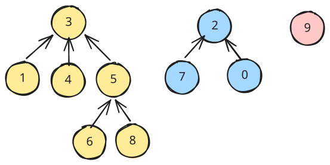
- Los elementos de la estructura se agrupan en distintos árboles
n-arios.
- Dos elementos están en la misma clase de equivalencia si pertenecen al mismo árbol.
unir(a, b)busca las raíces deayb, y coloca el árbolacomo subárbol de la raíz deb, o viceversa.unidos(a, b)devuelvetruesi las raíces de los árboles a los que pertenecenaybcoinciden.
Implementación (*)
- En realidad, esta estructura de árboles se representa mediante un
vector, donde
v[i]contiene el padre del elementoien el respectivo árbol.- Si
ino tiene padre, entoncesv[i] = -1.
- Si
| 0 | 1 | 2 | 3 | 4 | 5 | 6 | 7 | 8 | 9 |
| 2 | 3 | -1 | -1 | 3 | 3 | 5 | 2 | 5 | -1 |
Implementación (*)
Utilizando distintas optimizaciones, se consigue mantener la altura de los árboles lo más baja posible.
- Unión por tamaños
-
Al unir dos clases de equivalencia, se colocan los árboles de menor altura como hijos de las raíces de los árboles de mayor altura.
- Compresión de caminos
-
Al comprobar a qué clase de equivalencia pertenece un elemento, se coloca ese elemento y todos sus antecesores como hijos directos de la raíz.
Más información (*)
Vídeo: https://youtu.be/RqcwQS_0mcA
-
Thomas Cormen, Charles E. Leiserson, Ronald L. Rivest, Clifford
Stein
Introduction to algorithms, fourth edition
The MIT Press, 2022
Capítulo 19
6.9Árbol de recubrimiento mínimo
algoritmo
de Kruskal
Árboles de recubrimiento
Suponemos un grafo \(G\) conexo no dirigido.
Un árbol de recubrimiento de \(G\) es un subgrafo que conecta todos los vértices de \(G\) y que no contiene ciclos.
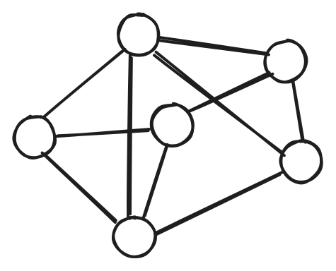
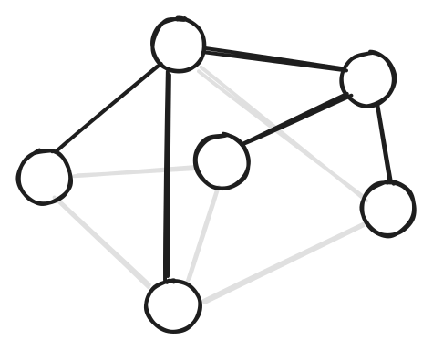
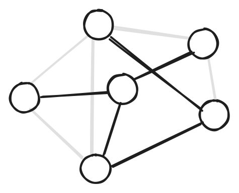
- Si \(G\) tiene \(v\) vértices, cada árbol de recubrimiento tiene exactamente \(v-1\) aristas.
Árboles de recubrimiento mínimo
- Supongamos que nuestro grafo es valorado. Es decir, cada arista tiene un coste.
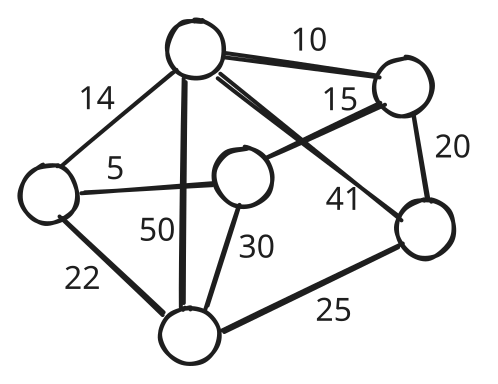
- El coste de un árbol de recubrimiento es la suma de los costes de las aristas que forman parte de él.
¿Cúal es el árbol de recubrimiento de coste mínimo del grafo?
Simplificaciones
- Suponemos que el grafo \(G\) es conexo \(\Longrightarrow\) existe un árbol de recubrimiento.
- Suponemos que no hay dos aristas en \(G\) con el mismo coste \(\Longrightarrow\) el árbol de recubrimiento mínimo es único.
Estas suposiciones no son estrictamente necesarias para el algoritmo que veremos, pero simplifican las demostraciones.
Algoritmo de Kruskal
Es un algoritmo voraz que calcula el árbol de recubrimiento mínimo (ARM) de un grafo \(G\).
Consiste en recorrer las aristas en orden ascendente de coste. Para cada arista, se añade al ARM salvo que conecte dos vértices que ya están en el ARM.
Ordenar las aristas por coste, de menor a mayor.
Inicialmente, \(R = \emptyset\).
Mientras no se hayan recorrido todas las aristas y \(|R| < \texttt{num\_vertices}(G) - 1\):
- Sea \(a\) la arista que se está recorriendo actualmente.
- Si el grafo \(R \cup \{a\}\) no contiene ciclos, añadir \(a\) a \(R\).
Devolver \(R\).
Detección de ciclos
¿Cómo sabemos si, al añadir una arista al ARM, se forma un ciclo?
Mediante una estructura unión-find que contiene los vértices del grafo.
Cada clase de equivalencia es una componente conexa de los vértices seleccionados del ARM.
Cada vez que se añade una arista al ARM, se fusionan las clases de equivalencia de los vértices adyacentes.
Para saber si se formaría un ciclo al añadir una arista, basta con comprobar si los vértices conectados por la arista forman parte de la misma clase de equivalencia.
Ejemplo
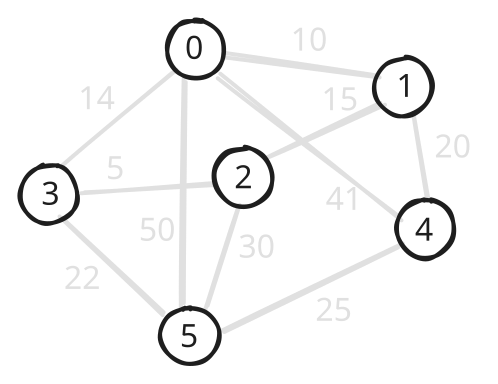
Aristas ordenadas:
| 5 | 10 | 14 | 15 | 20 | 22 | 25 | 30 | 41 | 50 |
Estructura union-find:
| 0 | 1 | 2 | 3 | 4 | 5 |
Ejemplo
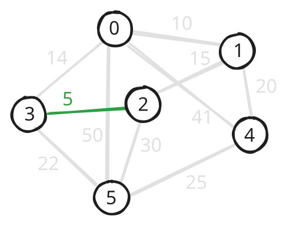
Aristas ordenadas:
| 5 | 10 | 14 | 15 | 20 | 22 | 25 | 30 | 41 | 50 |
Estructura union-find:
| 0 | 1 | 2 | 3 | 4 | 5 |
Los vértices
2y3no pertenecen a la misma clase de equivalencia.Añadimos la arista al ARM y fusionamos las clases.
Ejemplo
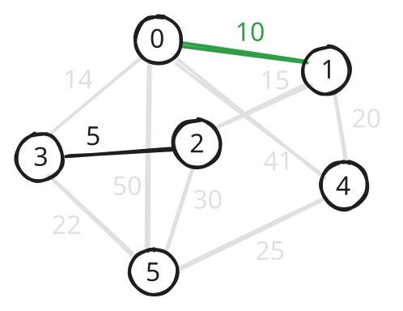
Aristas ordenadas:
| 5 | 10 | 14 | 15 | 20 | 22 | 25 | 30 | 41 | 50 |
Estructura union-find:
| 0 | 1 | 2 3 | 4 | 5 |
Los vértices
0y1no pertenecen a la misma clase de equivalencia.Añadimos la arista al ARM y fusionamos las clases.
Ejemplo
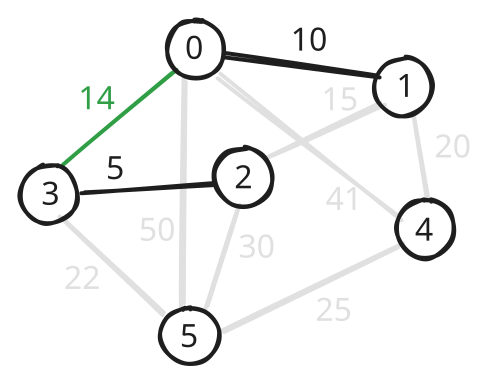
Aristas ordenadas:
| 5 | 10 | 14 | 15 | 20 | 22 | 25 | 30 | 41 | 50 |
Estructura union-find:
| 0 1 | 2 3 | 4 | 5 |
Los vértices
0y3no pertenecen a la misma clase de equivalencia.Añadimos la arista al ARM y fusionamos las clases.
Ejemplo
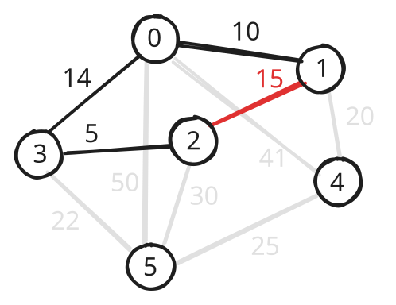
Aristas ordenadas:
| 5 | 10 | 14 | 15 | 20 | 22 | 25 | 30 | 41 | 50 |
Estructura union-find:
| 0 1 2 3 | 4 | 5 |
Los vértices
1y2pertenecen a la misma clase de equivalencia.No añadimos la arista al ARM.
Ejemplo
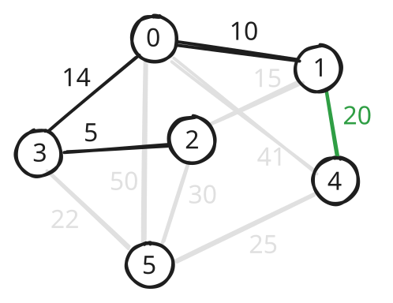
Aristas ordenadas:
| 5 | 10 | 14 | 15 | 20 | 22 | 25 | 30 | 41 | 50 |
Estructura union-find:
| 0 1 2 3 | 4 | 5 |
Los vértices
1y4no pertenecen a la misma clase de equivalencia.Añadimos la arista al ARM y fusionamos las clases.
Ejemplo
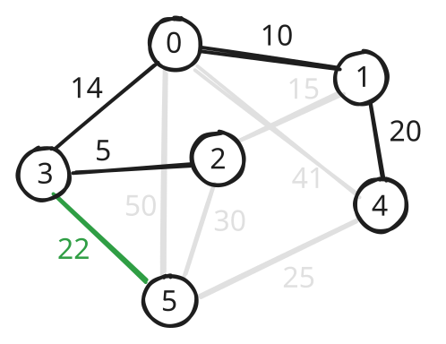
Aristas ordenadas:
| 5 | 10 | 14 | 15 | 20 | 22 | 25 | 30 | 41 | 50 |
Estructura union-find:
| 0 1 2 3 4 | 5 |
Los vértices
3y5no pertenecen a la misma clase de equivalencia.Añadimos la arista al ARM y fusionamos las clases.
Ejemplo
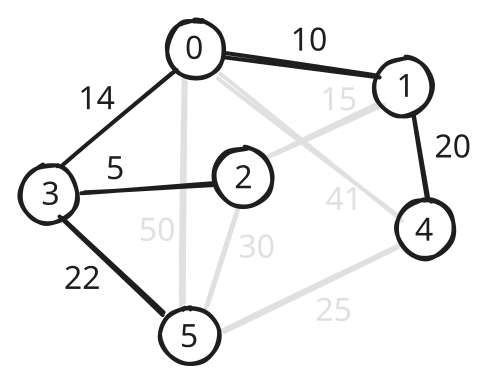
Aristas ordenadas:
| 5 | 10 | 14 | 15 | 20 | 22 | 25 | 30 | 41 | 50 |
Estructura union-find:
| 0 1 2 3 4 5 |
- Ya hemos seleccionado 5 aristas (= 6 - 1). Por tanto, ya hemos terminado.
Corrección del algoritmo
Propiedad de corte
Supongamos que \(V\) es el conjunto de vértices de un grafo.
Un corte de un grafo es una partición del conjunto \(V\) de vértices en dos conjuntos disjuntos \(V_1\) y \(V_2\).
Decimos que una arista \(a\) cruza un corte si conecta un vértice de \(V_1\) con otro de \(V_2\)
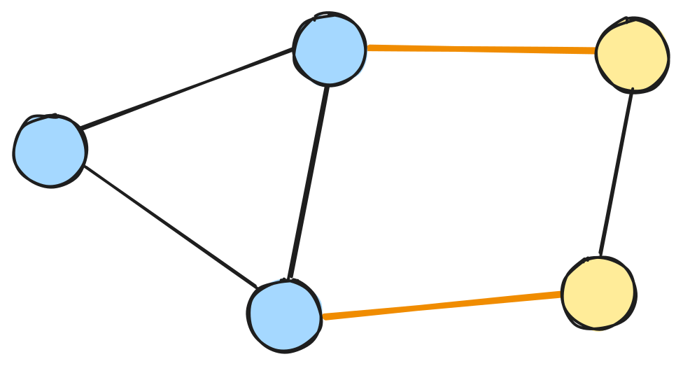
Propiedad del corte
Proposición
Dado un corte cualquiera de un grafo, sea \(a\) la arista de menor coste de entre todas que cruzan el corte. La arista \(a\) debe formar parte del ARM del grafo.
Demostración
Supongamos que el ARM del grafo no contiene la arista \(a\). Debe existir otra arista distinta \(a'\) en el ARM que cruce el corte (de lo contrario, no sería árbol de recubrimiento). Al reemplazar \(a'\) por \(a\) en el árbol, se obtiene un árbol de recubrimiento de coste menor, contradiciendo el hecho de que el ARM tiene coste mínimo.
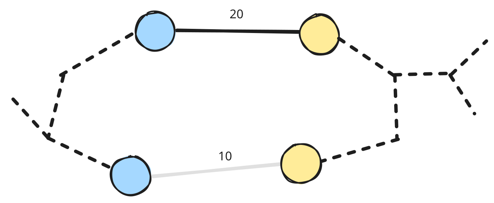
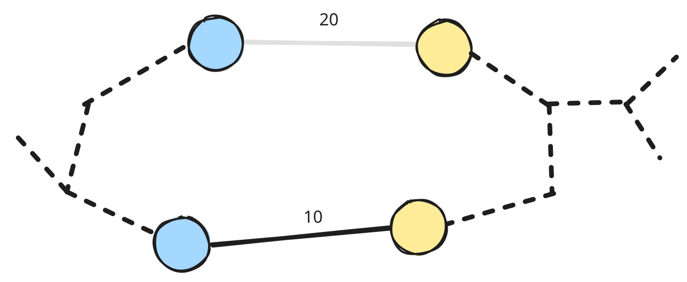
Demostración del algoritmo de Kruskal
- En el transcurso del algoritmo de Kruskal,
suponemos el corte formado por dos conjuntos disjuntos:
- Los vértices del grafo que forman parte del ARM construido hasta ahora.
- Los vértices que aún no forman parte del ARM.
- En cada paso del algoritmo, si se añade una arista,
la arista añadida conecta un vértice del ARM con otro vértice ajeno al
ARM.
- Por tanto, cada arista que se añade es una arista que cruza el corte existente en ese momento.
- Además, como se recorren las aristas en orden
ascendente de coste, cada arista que se añade es la de menor coste de
entre todas aquellas que cruzan el corte existente en ese momento.
- Por tanto, todas las aristas que se añaden forman parte del ARM.
Implementación del algoritmo
Implementación en C++
Inicialización:
vector<arista> kruskal(const grafo &g) {
int v = num_vertices(g);
// Obtenemos las aristas del grafo y las guardamos en un
vector: \(\Theta(a)\)
vector<arista>
lista_aristas;
for (int
i = 0; i < v; i++)
{
for (const arista
&a : aristas(g, i)) { lista_aristas.push_back(a);
}
}
// Ordenamos las aristas por
coste: \(\Theta(a \log
a)\)
sort(lista_aristas.begin(), lista_aristas.end(),
[](const arista &a, const arista &b)
{
return a.coste <
b.coste;
});
...
Bucle principal:
...
union_find uf(v); // Crear
estructura union-find: \(\Theta(v) \subseteq
\Theta(a)\), porque \(a \geq v -
1\)
vector<arista>
result; // Vector con aristas
seleccionadas
int i = 0;
while (i <
lista_aristas.size() && result.size() < v - 1) { // \(\Theta(a)\) iteraciones en c.
peor
arista actual = lista_aristas[i];
// Si los vértices que une la arista no forman parte del
ARM, añadimos la arista
if
(!uf.unidos(actual.vertice1, actual.vertice2))
{
result.push_back(actual);
uf.unir(actual.vertice1,
actual.vertice2);
}
i++;
}
return
result;
}
Coste: \(\Theta(a \log a)\) en tiempo \(\Theta(a)\) en espacio, donde \(a\) es el número de aristas.